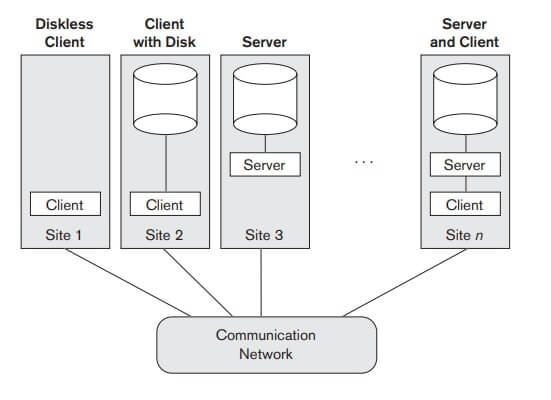

Software in Internet
Client software

In Internet very important is good software what can communicate with World Wide Web. One of most popular software type is browser. Using browser user can very simply "surfing" Internet and found everything what they need.
Next type of software is mobile software with Internet connection. Now a lot of people have different mobile devices what required specialiset software what require Internet connection. Some software need Internet just sometimes, but some software need Internet all the time.
Server software
In this category don't have big choose, for servers have only software to take connection from client and send answer to client. But there is lot of types in subcategory ,for example just website back-end software, cloud software, REST Api server software and lot more.